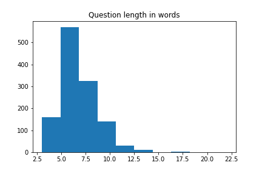
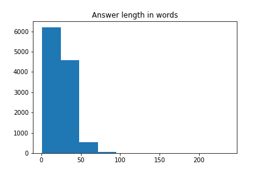

WikiQA Dataset
Summary
1,242
Unique Questions
6.46
Average Words per Question
11,406
Unique Answers
25.36
Average Words per Answer
12,153
Question-Answer Pairs
9.78
Candidate Answers per Question
1.18
Relevant Answers per Question
1:9
Relevant VS Non-Relevant Answers

Question Length distirbution
Shows the length distribution in question set

Answer Length distirbution
Shows the length distribution in answer set
Question Type

Question Type distribution
Shows the distribution of "wh-" type in question set
First three words of questions
Shows the distribution of the first 3 words in question set
Answer Type

Answer Type distribution
Shows the distribution of ansnwer type in answer set
Answer Per Question distirbution
Shows the distribution of candidate answers per question
| Named Entity | Description Name |
|---|---|
| PERSON | People, including fictional |
| NORP | Nationalities or religious or political groups |
| FAC | Buildings, airports, highways, bridges, etc. |
| ORG | Companies, agencies, institution, etc. |
| GPE | Countries, cities, states |
| LOC | Non-GPE locations, mountain ranges, bodies of water |
| PRODUCT | Objects, vehicles, foods, etc. |
| EVENT | Named hurricanes, battles, wars, sports events, etc. |
| WORK_OF_ART | Titles of books, songs, etc. |
| LAW | Named documents made into low |
| LANGUAGE | Any named language |
| DATE | Absolute or relative dates or period |
| TIME | Times smaller than a day |
| PERCENT | Percentage, including "%" |
| MONEY | Monetary values, including unit |
| QUANTITY | Measurements, as weight or distance |
| ORDINAL | first, second, etc. |
| CARDINAL | Numerals that do not fall under another type |
Question and Answers

Question and Answer similarity distribution
Shows the distribution of similarity between question and answer
N-gram word overlaps
Shows the distribution of words overlap between question and answer
Gender Distribution

Gender Distribution
Shows the gender distribution in dataset
Sentiment Analysis

Sentiment Analysis
Shows sentiment analysis of each QA pair
Word Cloud

Dataset Word Representation
Shows the word representation of the whole dataset
Question Word Representation
Shows the word representation of the question set
Answer Word Representation
Shows the word representation of the answer set